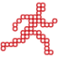
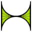

Flashpoint supports games and animations created for a variety of web plugins and standards - not just Flash. This page contains an overview of each technology, alongside their entry counts as of version 9.0.
by The Groove Alliance | 2002-2009 | 32 Entries
Founded in 1998, The Groove Alliance was the developer of 3D Groove SX, a Shockwave-enabled 3D game engine. Later on in 2002, the engine would branch out from Shockwave and into its own thing called 3D Groove GX. Both variations could be used for the development of online games and desktop applications. This proved to be a success for the company, amassing a large corporate user base and leading to the creation of several high-profile titles for TV shows and other big properties. After the hype fizzled out, The Groove Alliance was reshaped into OTOY in 2008, but the 3D Groove website stayed online until 2009. The exact cause of the original company’s demise is unknown, but internal struggles were confirmed to have taken place.
by Dassault Systèmes | 1999-2017 | 180 Entries
3DVIA Player (formerly 3D Life Player, Virtools Player, and NeMo Web Player, not to be confused with 3DVIA Studio/Beta Player or 3DVIA Composer Player) was a browser plugin by Dassault Systèmes for the playback of 3D experiences made in Virtools. It was meant for advanced, practical applications of 3D such as computer based training, virtual tours and real estate. 3DVIA Player was also used for webgames, with some of its primary users for this purpose being Quebec-based game studio Sarbakan and the Amsterdam-based Little Chicken Game Company. The last update, version 5.0, was released in 2009. The download page would stay up for the coming years until it was taken down in 2016. By then, it had been installed more than 30 million times.
ActiveX Controls
by Microsoft | 1996- | 99 Entries
Released in 1996 by Microsoft, ActiveX was a software framework which served as a standard that allowed encapsulating programs as containers for use in other unrelated programs, called ActiveX Controls. They could be embedded into HTML content, and single purpose Controls could be created specifically for use in Internet Explorer, for the purpose of webgame playback. After the launch of Edge in 2015, the software was deprecated, and its use for web applications has seemingly ceased, being relegated to Internet Explorer 11 for legacy software support.
by FutureWave, Macromedia, Adobe | 1995-2020 | 67,353 Entries
Adobe Flash Player (also just Flash, formerly Macromedia Shockwave Flash Player) is a player for vector animations and graphics, often with added interactivity. It was used as a medium for webgames due to its effective compression, low price, ease of use and large install base. Developed in 1995 and first introduced by FutureWave in 1996, it was capable of little more than basic animations and buttons to control them. As it gained popularity, more advanced features were added to the player, such as the ActionScript programming language. However, as people grew wary of its potential security concerns, and HTML5 spiked in popularity among web developers, Adobe announced Flash’s End-of-Life date to be December 31st, 2020.
Adobe Shockwave Player
by Macromedia, Adobe | 1995-2019 | 2,965 Entries
Adobe Shockwave Player (also Shockwave, formerly Macromedia Shockwave Player or Shockwave Director Player) is a player for interactive media released in 1995. Built on technology that had been in development 10 years earlier by MacroMind, it became a web plugin only after its acquisition by Macromedia. Unlike Flash, Shockwave featured the Lingo scripting language and C++ support through the use of Xtras, giving the player a wide range of capabilities including 3D. It saw widespread use on the early internet and on CD-ROM games, and gained mainstream popularity. The platform saw a significant decrease in popularity following Adobe's acquisition of Macromedia in favor of Flash, which was rapidly expanding feature-wise and was now owned by Adobe as well. Finally in February 2019, Adobe announced its discontinuation and cut support two months later.
by Macromedia, Adobe | 1996-2007 | 96 Entries
The Authorware Web Player was created by Macromedia in 1996 as one of the new features of Authorware 3.5. It was made as a way to run interactive programs developed with Macromedia Authorware on the web. Unlike most web plugins, Authorware’s primary purpose was to aid e-learning, leading to its use in businesses and in the academic field as a way to assemble multimedia learning material without the need of programming experience. The final version of the plugin was released in 2004, prior to the acquisition of Macromedia by Adobe in 2005, after which development stalled until the announcement of its discontinuation in 2007.
by iTechnologie Ldt. | 2010-2016 | 11 Entries
Burster was a 2010 implementation of the Blender Game Engine from 2000. The project was an attempt at reviving an official plugin launched with Blender, which was discontinued due to security concerns. It improved upon the original, taking advantage of newer versions of the engine for better performance and graphics. The last version was launched in 2013, and after 3 years of no updates, Burster was officially discontinued in 2016. The game engine itself was removed from Blender in 2018.
 GoBit Games Plugin
by GoBit Games | 2007 | 2 Entries
The GoBit Games Plugin was created in 2008 by GoBit, a small independent studio composed of former PopCap employees. Their first game, Burger Shop, was released in October 2007 and by popular demand received a web demo 4 months later using their then-new Games Plugin. A year passed and the demo was reworked as an advergame for Eggo, published by Shockwave.com on February 1, 2009. The plugin was abandoned shortly afterwards with the release of Burger Shop 2 - its respective web demo using Flash instead - leaving Burger Shop and its reskin to be the only games ever created for it.
HTML
by World Wide Web Consortium, WHATWG | 1993- | 5,108 Entries
HyperText Markup Language is the most basic standard of displaying documents through a web browser. Originally developed by Tim Berners-Lee throughout the early 1990s (with roots going as far back as 1980), HTML became the premier method of sharing information through the Internet, its capabilities being expanded upon by other languages such as CSS and JavaScript. For years, HTML and its conjoined languages were ignored as a platform for webgames, with most developers opting for plugin-based tech instead. But as Flash and plugins in general decreased in popularity, and HTML5 became a recommended standard, many have shifted their projects to the HTML family or abandoned special file formats altogether, instead posting their content to sites like YouTube. Note: For brevity reasons, Flashpoint labels any entry that doesn't contain frameworks or plugin-enabled content as "HTML".
 Hypercosm Player
by Hypercosm | 1999-2011 | 16 Entries
Based on technology in development since 1989, Hypercosm is a 3D-content web player which launched in 1999. The company made a hefty investment that didn’t pay back, being one of the many victims of the Dot Com crash, folding in 2003. However, thanks to a contract with NASA, the company managed to bounce back somewhat, and continued working on new projects until fading away in 2011.
Java Plug-in
by Sun Microsystems, Oracle | 1995-2018 | 786 Entries
Released alongside the Java programming language as one of its functions, Java Applets were small application windows embedded onto pages for extra interactive features. They were made to be cross compatible on different operating systems and browsers, as well as be more powerful than standard HTML. It remained a capable option for more than 10 years, but beginning in 2013 the technology underlying the Applets started becoming unsupported on major browsers, with many becoming unusable, leading to them being deprecated in 2017 and being removed from Java SE 11 in 2018.
by Microsoft | 2007-2021 | 199 Entries
Developed by Microsoft as a response to Flash and Java, and launched in 2007, Silverlight is a multimedia tool that focused on video streaming, notable for being used by Netflix. Later versions added more capabilities for other applications. It enjoyed a decent amount of popularity, with an adoption rate of 64.7% in 2011. However, in 2012 with the announcement of the end of NPAPI, the release of Windows 8, and the beginning of HTML5 adoption, Microsoft deprecated the software, and in 2015 with the release of Windows 10, it entered End-of-Life, being discontinued in October 2021.
by PopCap Games | 2004-2007 | 12 Entries
PopCap Plugin is a plugin by PopCap. In its early days, the company used Java for its online game demos due to its accessibility. Later on, however, development was shifted to an in-house plugin that was available as an ActiveX control and a traditional Firefox plugin. This gave PopCap the benefit of having their own proprietary platform for demo distribution. Unfortunately, its underutilization both by customers and PopCap themselves led the developer to switch to the more popular Flash by 2007.
Pulse Player
by Pulse Entertainment | 1999-2003 | 10 Entries
Starting development in 1997 under the name 3rd Degree, Pulse Player was a 3D plugin with a focus on animation. It was first released in 1999 with funding and backing from several experienced members in the field of internet media, and was used by several notable clients. The plugin was marketed as a fun and creative media platform, and appeared to be successful, but at the start of 2001 there was a shift in what the company wanted to pursue, rebranding the Player as a more serious business and educational tool. In 2003, 5.2 was the last version launched, and shortly after support was cut.
by ShiVa Technologies | 2004-2019 | 142 Entries
Created by Stonetrip, and named Ston3D Web Player before 2007, ShiVa Web Player was a 3D web content plugin for running software made in the ShiVa 3D Engine. It allowed complex 3D scenes with lighting and physics while having low processing requirements. Stonetrip later renamed themselves in 2013 to ShiVa Technologies SAS and focused exclusively on the engine. With the removal of NPAPI from most browsers, support for the plugin diminished, leading to the URLs of several core files going down in 2018 and breaking most games, and in 2019 its download was removed from ShiVa’s website.
Superscape Viscape
by Superscape | 1996-2000 | 103 Entries
Launched in 1996 by early 3D pioneer Superscape with support from Intel, Viscape was a 3D plugin that had the distinct advantage of interactivity with worlds, unlike the VRML 1.0 standard which allowed for only static models. It enjoyed a brief period of popularity, but VRML97 would level out the playing field by implementing its own interactivity abilities. Left with the impression of being an inferior proprietary option, an update named Viscape Universal was released in 1998 and implemented VRML support, alongside improvements to their own format in an attempt to remain relevant. This proved to be a failure, with reviewers calling the plugin dated and cumbersome despite their attempts at a revival. Although the last update was released in 2000, its tech continued to be utilized in Superscape's Lego Creator series for the following year. The company then refocused on mobile game development and achieved moderate success before being purchased by Glu Mobile in 2008.
by Sun Microsystems, Scriptics, Tcl Core Team | 1996-2006 | 36 Entries
Developed by a small team and launched in 1988, Tool Command Language (Tcl, pronounced “tickle”) is an open source dynamic programming language. In 1994, Sun Microsystems brought the team in to develop the tech further. One of the outcomes of this venture was a 1996 plugin that could run Tcl applets (“Tclets”) embedded in pages. In late 1997, Tcl’s development was spun off to an independent company called Scriptics, and spun off once again into Tcl Core Team in 2000. While development of the language remains lively to this day, work on the plugin has slowed to a crawl despite not being officially discontinued. The latest version, 3.1.0, was released in 2006.
Unity Web Player
by Unity Technologies | 2005-2016 | 1,016 Entries
Unity Engine is a cross-platform game engine that aimed to make game development more accessible, and is the most popular third-party game development software amongst developers worldwide. Created alongside Unity itself and implemented in the first patch in 2005, Unity Web Player was a tool to play Unity games on the web. It remained a popular platform for 3D games, but with the removal of NPAPI support in 2016, the plugin was dropped in favor of Unity WebGL.
Vitalize!
by Corel, Clickteam | 1997-2012 | 176 Entries
Created in 1997 by Corel for displaying content made with their Click&Create multimedia authoring program, Vitalize! was a low bandwidth plugin dedicated to simple web games with an emphasis on gaming, marketing and advertising. Distributed with the help of Europress, it took pride in being “easy to learn and use unlike Java or Shockwave.” Sometime in 1999 the former Corel employees left to create Clickteam, which then took over development in 2000 with version 2.0. The latest version 4.0 was released in 2007/2008, and was available on their website until 2012.
by Web3D Consortium | 1994-2001 | 156 Entries
Virtual Reality Modeling Language is an open 3D standard and the very first created for the web. When it was initially specified in November 1994, the format could only represent static models with no interactivity. This problem was solved in 1997 when version 2.0, better known as VRML97, was published. Despite never seeing mainstream use, it would become the most popular option for internet-based 3D upon its launch before being superseded in 2001 by X3D (which was backwards compatible with VRML worlds). As it was a file format and not a plugin in itself, many different implementations have been made of VRML, often adding their own non-standard features.